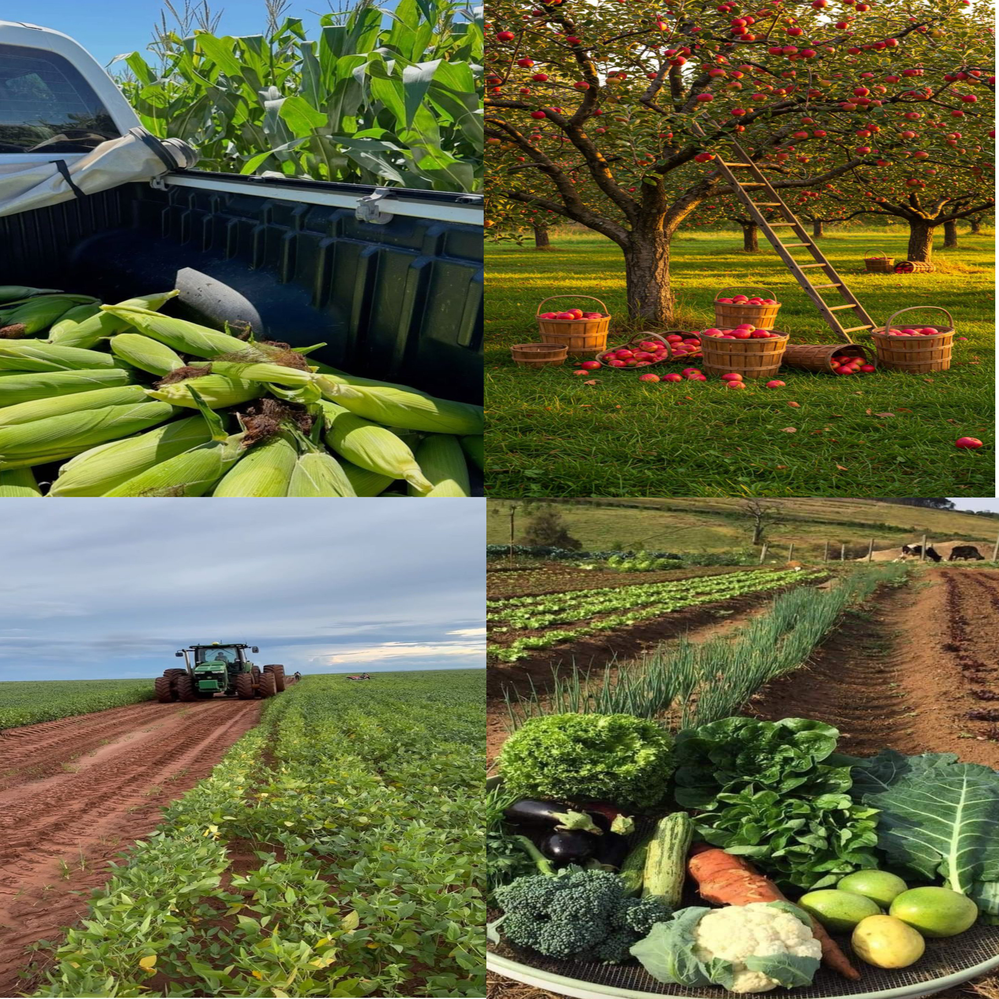
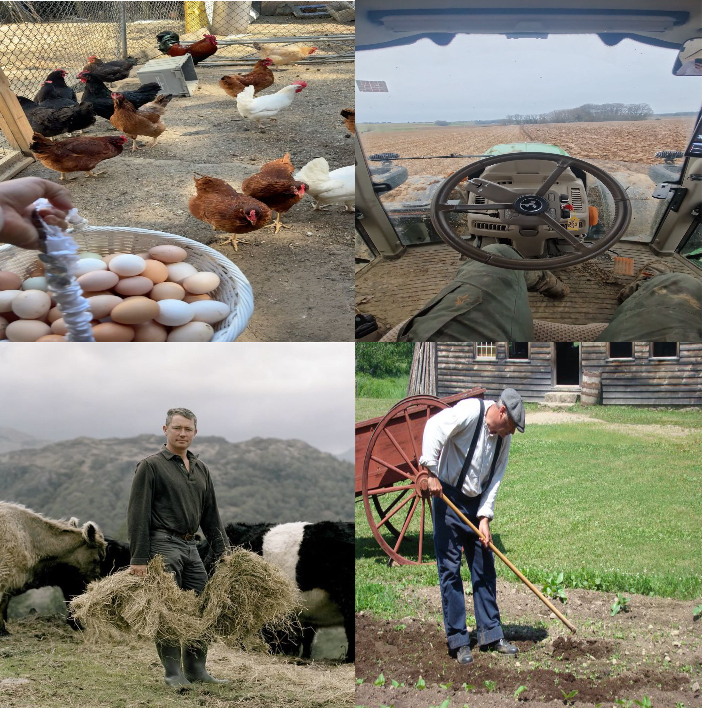
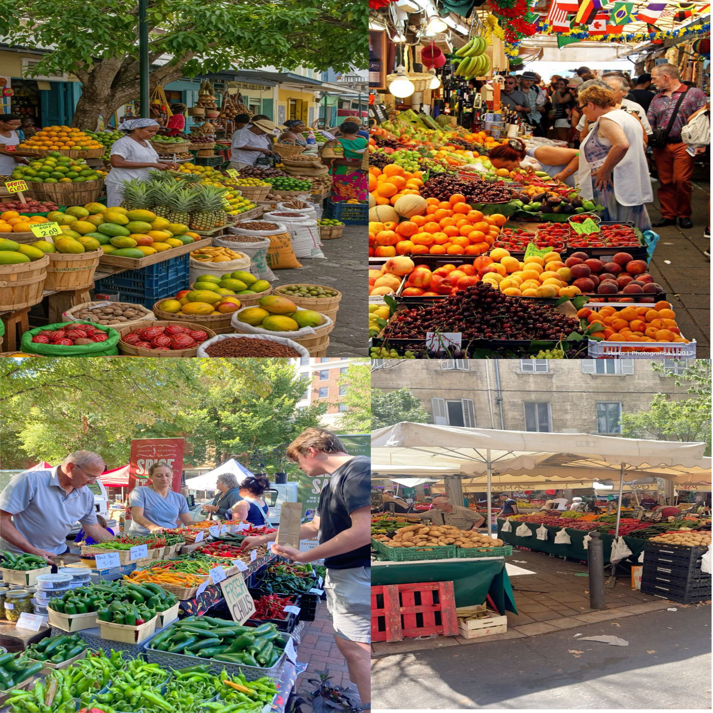

Nos élevages
Nos animaux sont élevés avec soin et respect dans de grands espaces naturels. Nourris sainement et suivis quotidiennement, ils nous offrent des produits de qualité. L’élevage à Saveur de la Ferme reflète notre engagement pour le bien-être animal et une production locale authentique.
.jpeg)
Notre agriculture
Nous cultivons nos champs selon les saisons, sans produits chimiques, en privilégiant des méthodes durables. Chaque fruit et légume est récolté à maturité pour préserver goût et fraîcheur. Notre agriculture responsable garantit des produits sains et respectueux de la terre.
La vie à la ferme
Chaque matin, nous prenons soin des animaux, entretenons les cultures et préparons les produits pour le marché. La vie à la ferme demande du travail et de la passion, mais elle offre la satisfaction de partager le vrai goût du naturel avec chacun.
Le marché
Chaque semaine, nous proposons nos produits frais au marché local : fruits, légumes, œufs et fromages. Ces moments d’échange nous rapprochent de nos clients et valorisent notre savoir-faire. Acheter chez nous, c’est soutenir une ferme engagée et goûter à l’authenticité.
